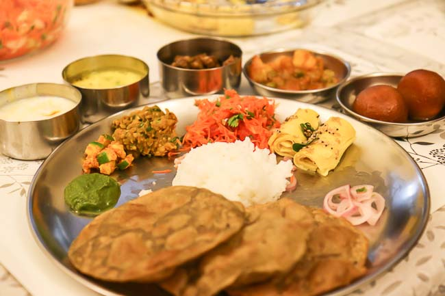

My Food Blog

Indian Recipe: The Great Indian Thali

Ingredients
- wheat bread
- minced beef
- 1 onion, chopped
- 2 cloves garlic, minced
- 400g canned tomatoes
- Salt and pepper
- Parmesan cheese (optional)
Instructions
- Boil the spaghetti according to package instructions.
- In a pan, sauté the onions and garlic until soft.
- Add the minced beef and cook until browned.
- Pour in the canned tomatoes and season with salt and pepper.
- Simmer for 20 minutes.
- Serve the sauce over the cooked spaghetti and garnish with Parmesan cheese.
Quick Facts
| Prep Time: |
30 minutes |
| Cook Time: |
80 minutes |
| Servings: |
4 |
Leave a Comment